- Object Detection Library
- Neck
- 1 Stage Detectors
- EfficientDet
Object Detection Library
Overview
| MMDetection | Detectron2 | |
|---|---|---|
| 특징 | - 전체 프레임워크를 모듈 단위로 분리해 관리할 수 있음 - 많은 프레임워크를 지원함 - 다른 라이브러리에 비해 빠름 | - 전체 프레임워크를 모듈 단위로 분리해 관리할 수 있음 - OD 외에도 Segmentation, Pose Prediction 등의 알고리즘을 지원함 |
| 지원 모델 | - Fast R-CNN - SSD - YOLO v3 - DETR ..etc | - Faster R-CNN - RetinaNet - Mask R-CNN - DETR ..etc |
MMDetection
Pytorch 기반의 Object Detection 오픈소스 라이브러리
일정 수준의 코딩실력이 된다면 쉽게 사용 가능
커스터마이징 어려움
Two-Stage Detector의 Pipeline
Input→Backbone→Neck(일종의 Feature Map)→Dense Prediction→Prediction
MMDetection 2Stage Model Pipeline
➡️ Backbone➡️Neck➡️—————➡️ROI Head
↘️ ↗️
DenseHead
-
Backbone : 이미지를 Feature Map으로 변형
-
Neck : Backbone과 Head를 연결, Feature Map을 재구성(ex. FPN)
-
Dense head : Feature Map의 dense location을 수행
-
ROI Head : ROI의 Feature를 받아 box classification, 좌표 회귀 등을 예측
Detectron2
Facebook AI Research의 Pythorch 기반 라이브러리
Object detection, segmentation, pose prediction 등 알고리즘 제공
PipeLine
- Setup Config
- Setup Trainer
- Satrt Training
Neck
Overview
Info
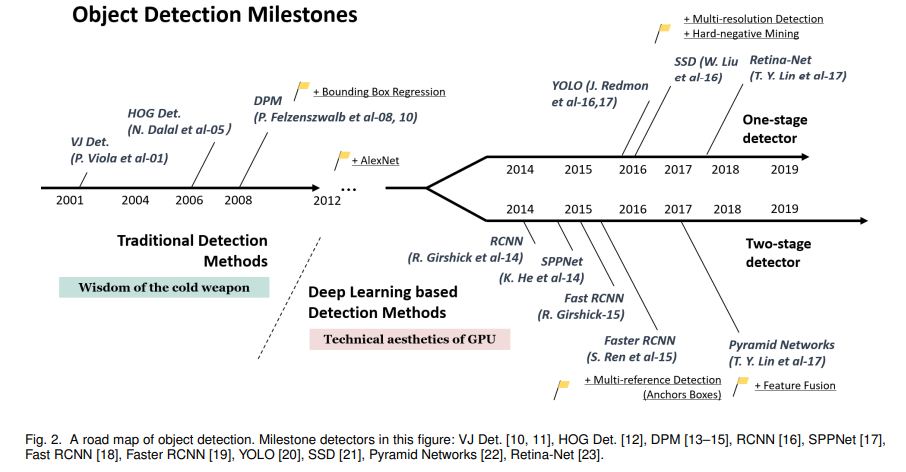
Neck은 무엇인가?
Object Detection에서 말하는 Backbone, Neck, Head
Backbone, neck, head는 무엇을 의미하는 걸까?
https://velog.io/@peterkim/Object-Detection%EC%97%90%EC%84%9C-%EB%A7%90%ED%95%98%EB%8A%94-Backbone-Neck-Head
2-Stage Pipline
- Input → Backbone → RPN→ Prediction
기존에는 Backbone에서 마지막 Feature Map을 사용해왔음
왜 마지막 feature map 만을 사용해야하는가?
- 연구를 통해 중간 과정의 Feature map들도 사용할 수 있겠다는 결론
- 중간단계의 Feature map들도 활용 시작
- 크기 별로 feaute를 추출하기 때문에 검출에 유리
- 다양한 크기의 객체를 더 잘 탐지하기 위해 필요
Low Level의 Feature는 Semantic 정보가 약하고, Local한 정보가 강함
High Level의 Feature는 Semantic 정보는 강하나 Local한 정보가 약함
-
서로간의 Feuatre 교환 필요
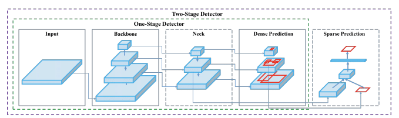
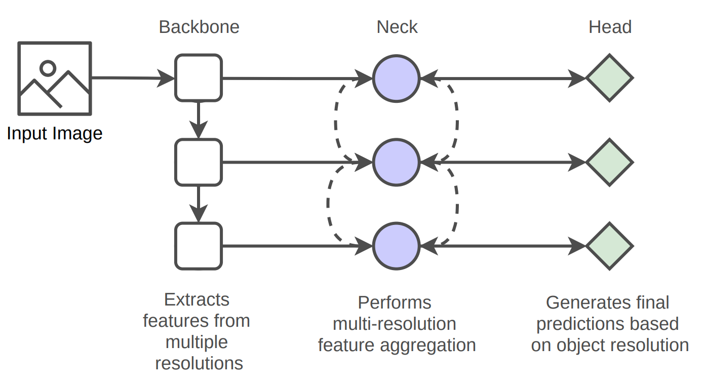
FPN(Feature Pyramid Network)
Understanding Feature Pyramid Networks for object detection (FPN)
Detecting objects in different scales is challenging in particular for small objects.
https://jonathan-hui.medium.com/understanding-feature-pyramid-networks-for-object-detection-fpn-45b227b9106c
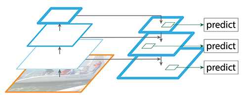
High Level에서 Low Level로 Semantic 정보 전달 필요
Pyramid 구조를 통해 High level 정보를 low level에 순차적으로 전달
용어
- Low level = Early stage = bottome
- High level = Late Stage = Top

Pipeline
- Bottom-Up
- image ~~ High Level까지 feature 전달됨, 일발적인 CNN Backbone 통과 과정을 의미
- Top-Down
- High Level ~~ Low Level까지 feature 전달
- Dimm이 맞지 않음
-
Top-Down Path : Up Convolution 진행(h,w 피팅)
-
기존 level Path : 1x1 Convolution 진행(c 피팅)
-
Stage Mapping
- ROI가 어느 Stage에서 온 것인지 알아야 함, roi의 w와 h 값으로 stage를 추정
Code
- Build laterals :각 feature map 마다 다른 채널을 맞춰주는 단계
- Build Top-down : channel을 맞춘 후 top-down 형식으로 featuremap 교환
- Build outputs : 최종 3x3 CNN을 통과하여 RPN을 들어갈 feature 완성
PANet(Path Aggregation Network)
Path Aggregation Network for Instance Segmentation
The way that information propagates in neural networks is of great importance.
https://arxiv.org/abs/1803.01534
FPN의 단점
- Bottom-Up의 과정에서 실제로는 매우 많은 CNN Layer를 거치기 때문에 상위 Level의 Layer로 Feature를 재대로 전달하는지 장담 할 수 없음(ex : ResNet의 긴 CNN 구조)
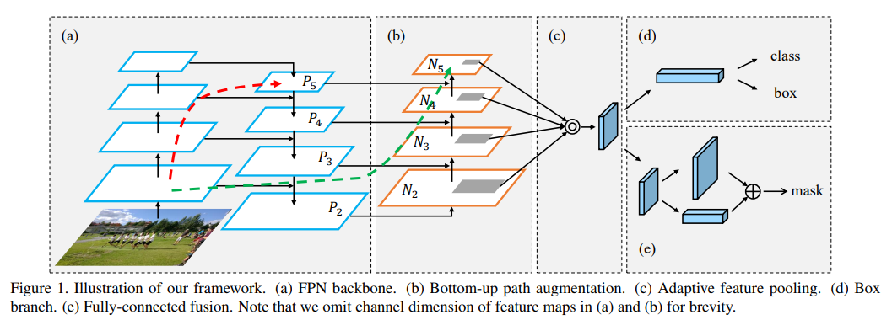
PANet의 Solution : Bottom-Up Path augmentation(첨가)를 위한 Network를 추가
Adaptive Feature Pooling
- 기존의 stage mapping(k 값 구하기)의 문제 : 수 pixel 차이로 stage가 변하는 경계선상에 있는 roi들이 존재
- Solution : 모든 Stage에서 ROI Pooling 수행
DetectroRS
DetectoRS: Detecting Objects with Recursive Feature Pyramid and Switchable Atrous Convolution
Many modern object detectors demonstrate outstanding performances by using the mechanism of looking and thinking twice.
https://arxiv.org/abs/2006.02334
Motivation
- Looking and thinking twice
- RPN
- Cascade R-CNN
- 반복적인 작업을 수행하면 성능이 올라갈까?
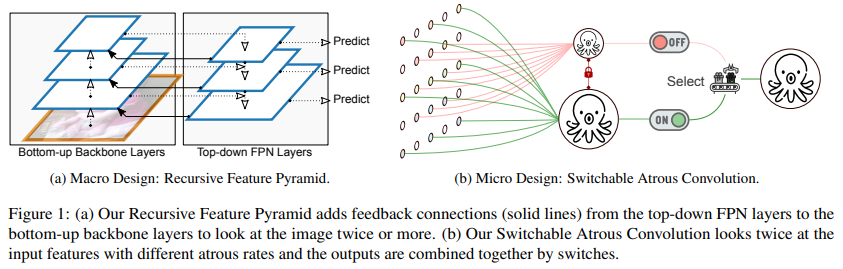
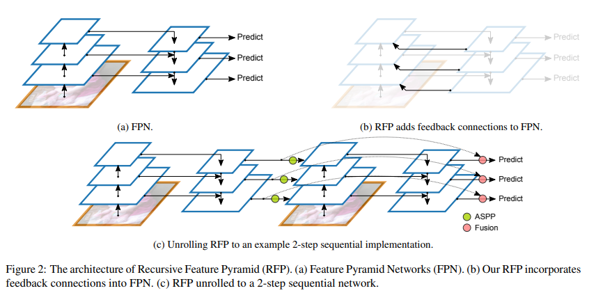
RFP(Recursive Feature Pyramid)
-
Feature Pyramid 구조와 유사, 추가적으로 backbone에서 feature pyramid의 정보를 가지고 학습 수행
-
Flops가 증가하는 단점
Atrous Convolution(or dilated convolution)
Atrous Convolution
Atrous Convolution 1.
https://better-tomorrow.tistory.com/entry/Atrous-Convolution
-
Receptive field를 키우는 테크닉
ASPP(Atrous Spatial Pyramid Pooling)
ASPP(Atrous Spatial Pyramid Pooling)
gaussian37’s blog
https://gaussian37.github.io/vision-segmentation-aspp/
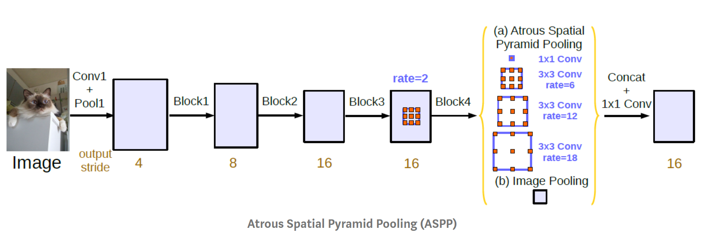
- 다른 크기로 Atrous Colvolution을 수행한 뒤, Concat하여 사용
BiFPN(EfficientDet)
EfficientDet: Scalable and Efficient Object Detection
Model efficiency has become increasingly important in computer vision.
https://arxiv.org/abs/1911.09070
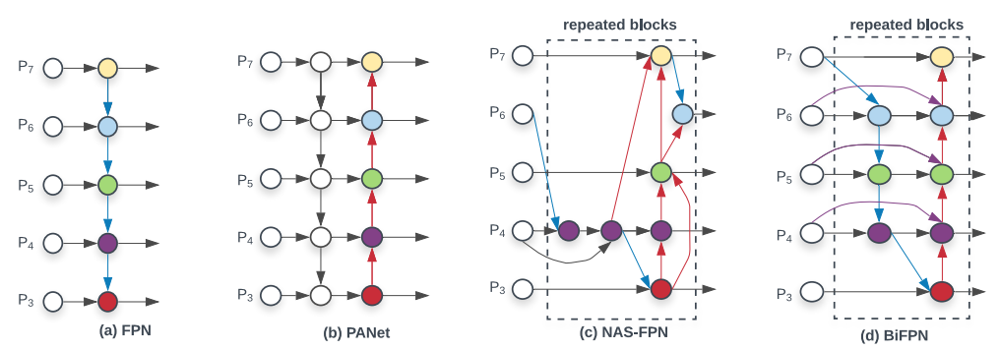
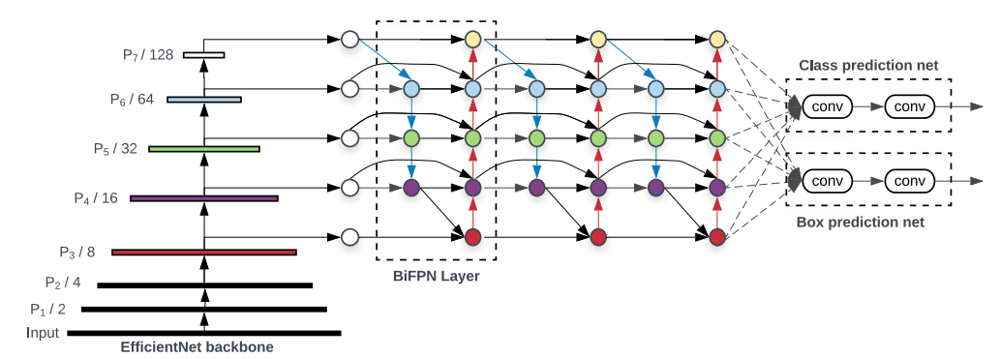
효율성을 위해, feature map이 한 곳에서만 오는 node들을 삭제(flops 감소)
Weighted Featrue Fusion
-
FPN과 같이 단순 Summantion이 아니라 feature 별 가중치를 부여해서 summantion
-
Feature별 가중치를 통해 중요한 feature를 강조하여 성능 상승
→ : 분모가 0이 되지 않기 위한 매우 작은 값
더 가볍고, 더 높은 성능 구현
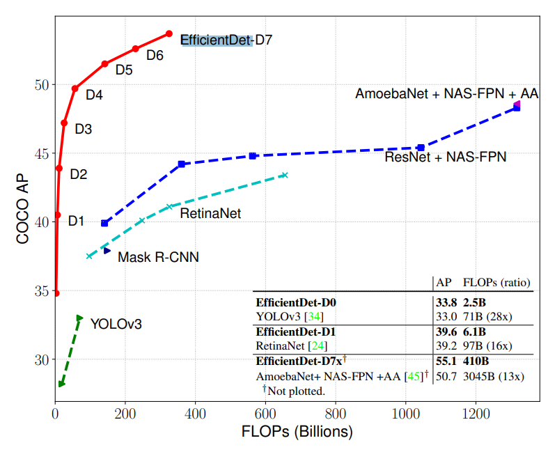
NasFPN
NAS-FPN: Learning Scalable Feature Pyramid Architecture for Object Detection
Current state-of-the-art convolutional architectures for object detection are manually designed.
https://arxiv.org/abs/1904.07392
기존에는 사람이 구조를 찾았음
FPN 구조에 따라서 성능이 변화
→ NAS를 사용해서 가장 성능이 높은 구조만을 채택해보면 어떨까?
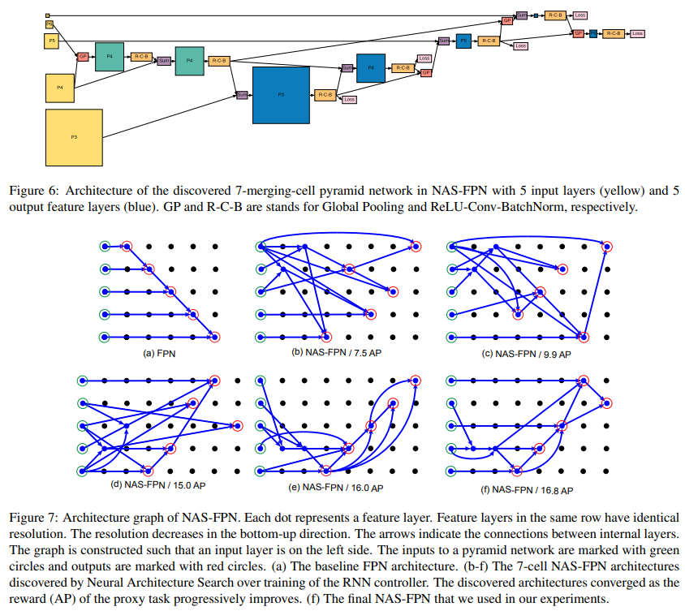
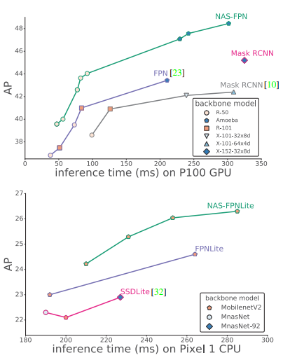
같은 inference time 대비 높은 성능
- COCO Dataset, ResNet 기준으로 찾은 Architecture, 범용적이지 못함
- Parameter가 많이 소요
- High serch cost
- 다른 Architecture, 다른 backbone에 적용하려면 새롭게 구해야 함
AugFPN
AugFPN: Improving Multi-scale Feature Learning for Object Detection
Current state-of-the-art detectors typically exploit feature pyramid to detect objects at different scales.
https://arxiv.org/abs/1912.05384
기존 FPN의 문제점
-
서로 다른 Level의 feature 간의 semantic 차이
-
Highest feature map의 정보 손실
- 가장 위의 layer는 다른 layer와 다르게 위쪽에서 전달해주는 feature가 없음
-
1개의 feature map에서 roi 생성
Residual Featrue Augmenmtation
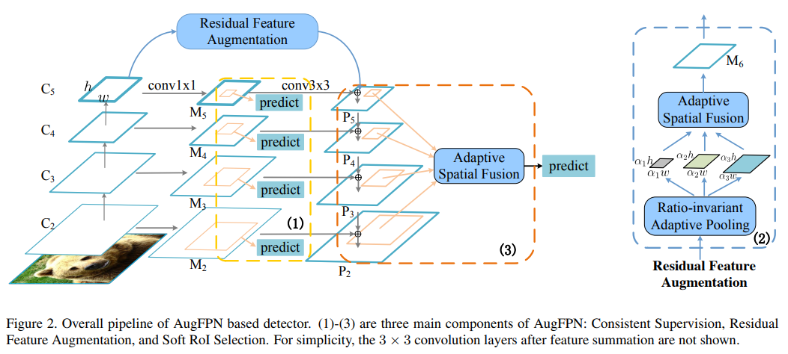
-
기존의 FPN의 문제점 중, “Highest feature map의 정보 손실”를 해결하기 위해 기존 backbone에서 Residual Feature Augmentation을 사용해 C5 Feature를 M5 Feature로 전달
-
Ratio-invariant Adaptive Pooling
- Target Feature Map을 Pyramid 형태로 다양한 Scale의 feature map 생성
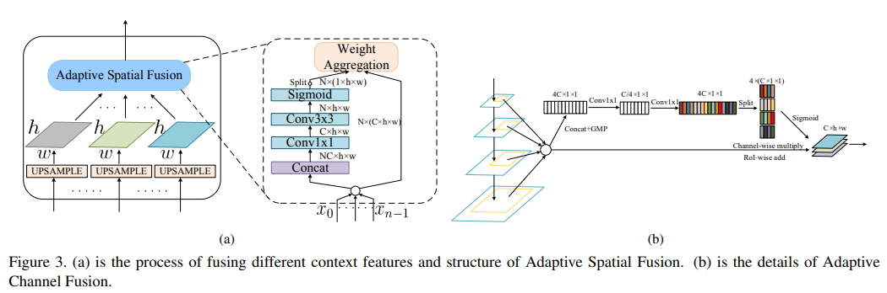
-
Adaptive Spatial Fusion
- Ratio-invariant Adaptive Pooling을 통해 생성한 다양한 크기의 N개의 Feature Map을 Upsample을 통해 동일 크기로 변경, Channel의 경우 256 Channel 고정
- Upsample된 N개의 Feature Map를 Concat → Nx256xHxW
- 1x1 Conv → CxHxW
- 3x3 Conv → NxHxW
- Sigmoid → Nx(1xHxW)
- 일종의 featuremap당 pixel별 weight로 볼 수 있음
- Weighted Sum → 256xHxW
-
N개의 Feature Map과 위 Sigmod 결과로 가중합 수행
-
Soft ROI Selection
- FPN : 하나의 FeatureMap에서 ROI 계산, Sub-optimal
- PANet : 모든 Feature map 사용, 하지만 max pool을 사용했기에 정보손실 가능성 존재
모든 Scale의 Feature에서 ROI Projection 진행 후 ROI Pooling 수행
Channel-wise 가중치 계산 후 가중합을 사용
- PANet의 Max Pooling을 학습가능한 가중 합으로 대체
1 Stage Detectors
Background & History
An overview of object detection: one-stage methods.
In this post, I’ll discuss an overview of deep learning techniques for object detection using convolutional neural networks.
https://www.jeremyjordan.me/object-detection-one-stage/
2 Stage Detector들의 단점 : 속도가 매우 느림
Real World에서 사용 가능한 Object Detector는 없을까?
2 Stage Detector
Input → Region Proposal → Classification → Multi-class classification & Bounding regression For each Proposed Region
1 Stage Detector
Input → Conv Layers → Feature Maps → Multi-class classification & Bounding regression For each Grid or Spatial Location
- Localization, Classification이 동시에 진행됨
- 전체 이미지에 대해 특징 추출, 객체 검출이 이루어짐
- 속도가 매우 빠름
- 영역추출을 하지 않고 이미지를 보기 때문에 맥락적 이해가 높음
- Background Error 낮음
- Yolo, SSD, RetinaNet, …etc
History
Info
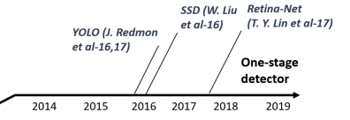
Yolo v1(You Only Look Once)
You Only Look Once: Unified, Real-Time Object Detection
We present YOLO, a new approach to object detection.
https://arxiv.org/abs/1506.02640
History
-
v1 : 이미지의 Bbox와 Classification을 동시에 예측하는 1 Stage Detector 등장
-
v2 : 빠르고 강력하고 더 좋게 향상
-
v3 : multi-scale feature maps 사용
-
v4 : 최신 딥러닝 기술(BagOf Freebies=BOF, Bag of Specials=BOS) 사용
-
v5 : 크기별로 모델 구성(Small, Medium, Lage, Xlarge)
Region Proposal 단계가 없음
GooLeNet의 변형구조
Pipeline
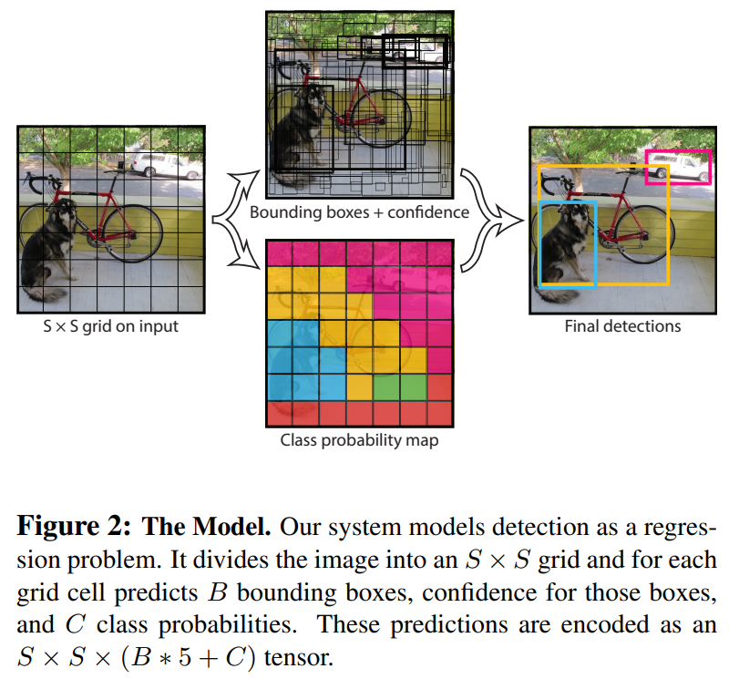
- 입력 이미지를 SxS 그리드 영역으로 나누기
- 각 그리드 영역마다 B개의 Bounding box와 Confidence score 계산
- Confidence = Pr(Object) x IOU(truth;pred)
- 각 그리드 영역마다 C개의 Class에 대한 확률 계산(C=20)
-
Conditional class probability = Pr(Class_i | Object)
-
Network Architecture
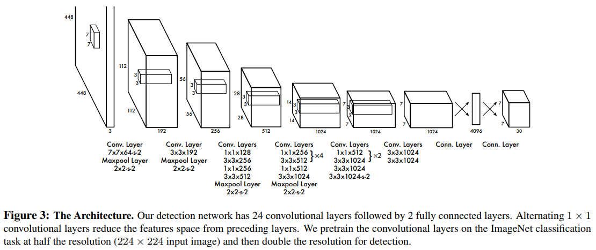
Output channel : 7(H)x7(W)x30(Info)
- Cell(Grid로 나눈 영역)마다 30개의 정보가 저장됨
-
5개 : 1번 Bonding Box 정보(center x, center y, width, height, confidence score)
-
5개 : 2번 Bonding Box 정보(x, y, width, height, confidence score)
-
20개 : 각 Class일 확률
-
Pipeline
-
각 Cell의 Bbox의 Confidence score와 Class 확률 Multiply → 20개의 Class별 Score를 담고 있는 7x7x2개의 Bbox가 생성됨
-
Score Thresholding → 너무 작은 Score는 0으로 Drop
-
Sort Descending → 내림차순으로 정렬
-
NMS
-
Out
Loss
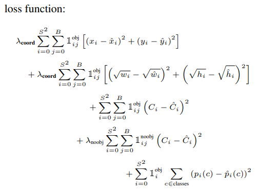
장점
Faster R-CNN에 비해 6배 빠른 속도
다른 real-time detector에 비해 2배 높은 정확도
물체의 일반화된 표현을 학습(학습하지 않은 다른 도메인의 이미지에서도 좋은 성능을 보임)
단점
Grid 보다 작은 크기의 물체 검출 불가능
마지막 feature만을 사용
SSD
SSD: Single Shot MultiBox Detector
We present a method for detecting objects in images using a single deep neural network.
https://arxiv.org/abs/1512.02325
Yolo vs SSD
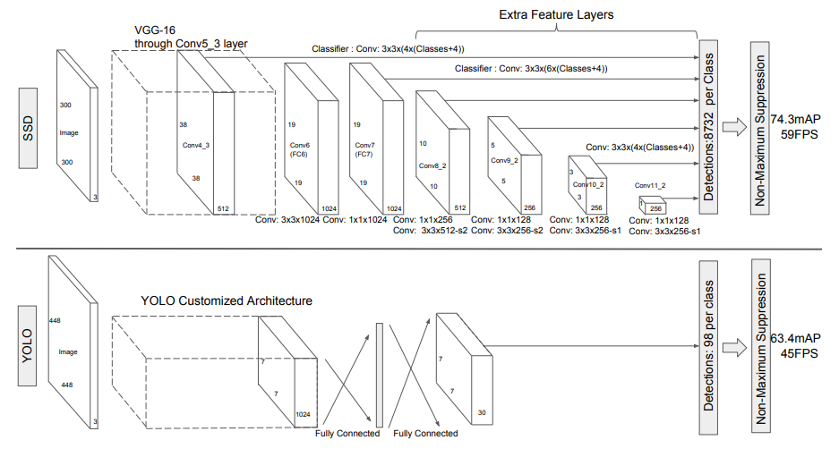
- Yolo
- 448 x 448 input
- fc layer
- use only last feature map
- SSD
-
300 x 300 input
-
no fc layer
-
use 6 featrue map
- early stage : small object detection
- late stage : big object detection
-
Default Box(=anchor box)
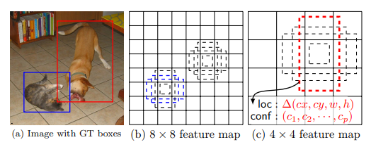
-
Pipeline
-
Multi-scale feature maps 사용
-
Feature Map(HxWx256)을 3x3 Conv로 5x5xC로 변환
- C = Number of Bbox * (cx, cy, w, h, background, class_1,class_2,…class_n)
- Number of Bbox(default box) : 6
-
각 Feature Map에 3x3 Conv(stride 1, padding1)연산으로 n * n * (#default box * (offset + class))의 output 생성 → 8732개의 bounding box
Training
-
Hard negative mining
-
NMS
Loss
-
Loss Function
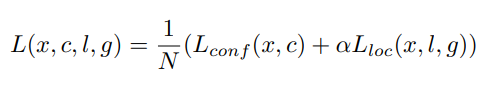
-
Localization Loss
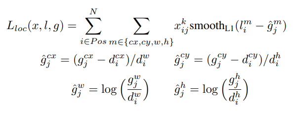
-
Confidence Loss
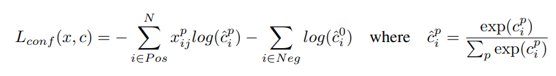
YOLO Follow-up
Yolo v2
- Better : 정확도 향상
- Batch normalization : mAP 2% up
- High resolution classifier : mAP 4% up
- Apply 224x224 Pretrained VGG to 448 x 448 Task
- Fine Tuning using 448x448 image
- Conv with anchor boxes : mAP 5% up
- remove fc layer
- anchor box 도입
- 5개의 anchor box
- Passthrough Layer
- Early feature map과 late feature map을 합쳐주는 Layer
- Fatser : 속도 향상
- GoogLeNet을 버리고 Darknet-19 아키텍쳐 적용
- Stronger : 더 많은 class 예측 80 → 9000
-
ImageNet, Coco Dataset 사용
-
Yolo v3
- Darknet-53 사용
- Resnet-101, resnet 152와 비슷한 성능 및 높은 FPS 달성
- Skip Connection 적용
- Max pooling x, Conv stride 2 사용
- Multi-scale feature map 사용(52x52, 26x26, 13x13)
RetinaNet
Focal Loss for Dense Object Detection
The highest accuracy object detectors to date are based on a two-stage approach popularized by R-CNN, where a classifier is applied to a sparse set of candidate object locations.
https://arxiv.org/abs/1708.02002
1 Stage Detector의 고질적 문제
- Class imbalance
- Grid로 나눠서 Cell 마다 모두 Bbox를 추정하게 함
- Positive Sample(Object area) < Negative Sample(BG Area)
- Anchor Box 대부분은 Negative Sample
-
2 Stage detector의 경우 RPN에서 BG 제거
-
Hard Negative mining
-
Concept
- Focal Loss 제안 : Cross entropy loss + scaling factor
- 쉬운 예제에 작은 가중치, 어려운 예제에 큰 가중치
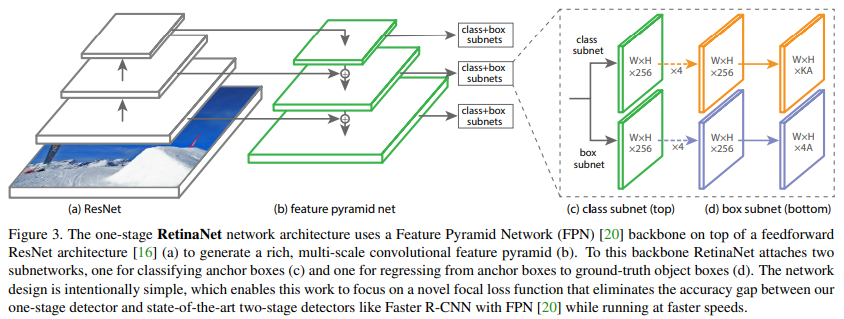
EfficientDet
EfficientNet
EfficientNet: Rethinking Model Scaling for Convolutional Neural Networks
Convolutional Neural Networks (ConvNets) are commonly developed at a fixed resource budget, and then scaled up for better accuracy if more resources are available.
https://arxiv.org/abs/1905.11946
등장배경
점점 빠르고 작은 모델에 대한 요구 증가
효율성과 정확도의 trade-off를 통해 모델 사이즈를 줄이는 것이 일반적
하지만 모델을 어떻게 압축해야 하는지 불분명
더 높은 정확도와 효율성을 가지면서 ConvNet의 크기를 키우는 방법(Scale Up)은 없을까?
Model Scaling
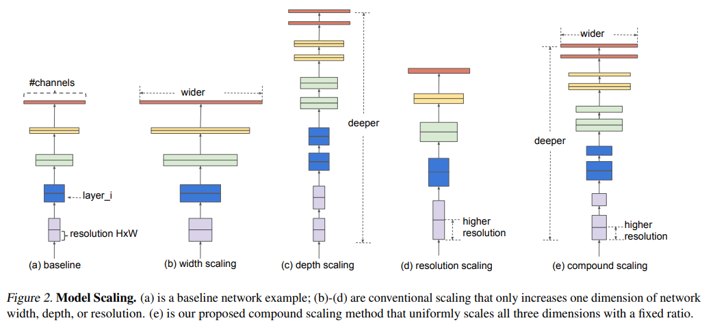
- Model이 커질수록, 성능이 증가 → 모델의 크기를 키움
- 모델의 크기를 키우다보면, 더 이상 성능 이점이 없어짐 → ‘잘’ 쌓는 방법이 있을 것이다
- 어떻게 잘 쌓아야 할까?
-
Width Scaling : Channel을 크기 주는 것
- ex) Wide ResNet
- 작은 모델에서 주로 사용됨(MobileNet, MnasNet)
- 더 wide한 네트워크는 미세한 특징을 잘 잡아내는 경향이 있음
- 그러나 극단적으로 얕은 모델은 High-level의 특징을 잘 잡아내지 못하는 경향이 있음
-
Depth Scaling : CNN을 더 깊게 쌓는 것
- ex) ResNet
- 많은 ConvNet에서 쓰이는 방법(DenseNet, Inception-v4)
- 깊은 ConvNet은 더 풍부하고 복잡한 특징들을 잡아낼 수 있고 새로운 Task에도 잘 일반화 됨
- 그러나 Gradient vanishing 문제로 깊어질수록 학습이 어려움
-
Resolution Scaling : 더 큰 Image를 사용하는 것
- 고화질의 이미지를 사용하면 ConvNet은 미세한 패턴을 잘 잡아낼 수 있음
-
Compound Scaling : 위 3개의 Scaling을 모두 사용하는 것
-
Better Accuracy & Efficiency
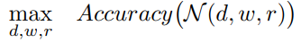
Model의 Accuracy를 최대화하는 d, w, r을 찾는게 목표
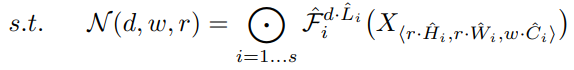
- Scale Factors
- d : Model의 depth를 조절하는 Factor
- w : Model의 Channel을 조절하는 Factor
- r : Model의 Resolution을 조절하는 Factor
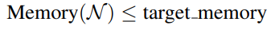
Model의 Memory는 Target의 Memory보다 작거나 같아야한다
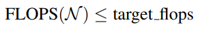
Model의 FLOPS는 Target의 FLOPS보다 작거나 같아야 한다
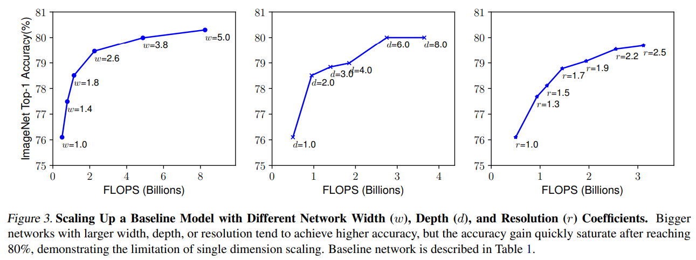
각 Factor를 증가시킬 때(다른 Factor는 통제) FLOPS 증가 대비 ImageNet Top-1 Accuracy(%)
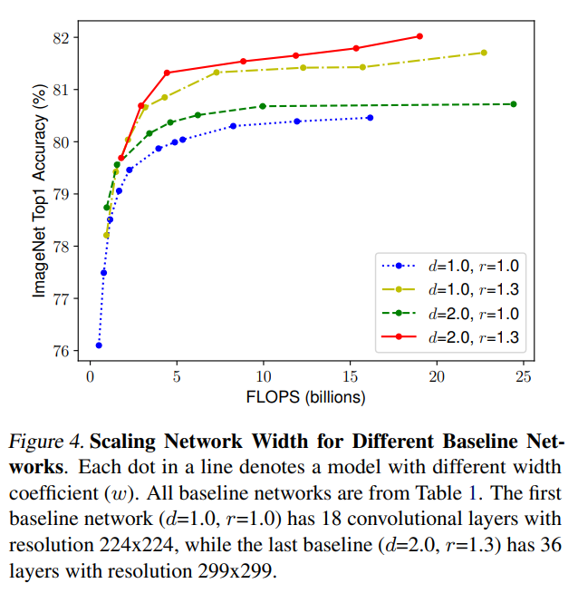
d,r을 변화시키면서 확인한 FLOPS 증가 대비 Top1 Accuracy(%)
- 효율적인 Model을 만들기 위해서는 d, w, r을 모두 적절히 변화시키는 Compound Scaling이 필요함을 실험적으로 증명
EfficientDet
EfficientDet: Scalable and Efficient Object Detection
Model efficiency has become increasingly important in computer vision.
https://arxiv.org/abs/1911.09070
Motivation
자원의 자약이 있는 상태에서 더 높은 정확도와 효율성을 가진 Detection 구조를 만드는 것이 가능할까?
EfficientNet의 아이디어는 Detection Task에도 적용 가능
Yolo나 SSD같이 1 Stage Detector에 속함
기존 Detection Model들의 문제와 해결방법
-
Efficient Multi-scale featrue fusion
-
Neck에서 Channel별 Resolition을 맞춰 Simple Summantion만 했음
-
단순합을 하는 것이 올바를까? → BiFPN 구조 제안
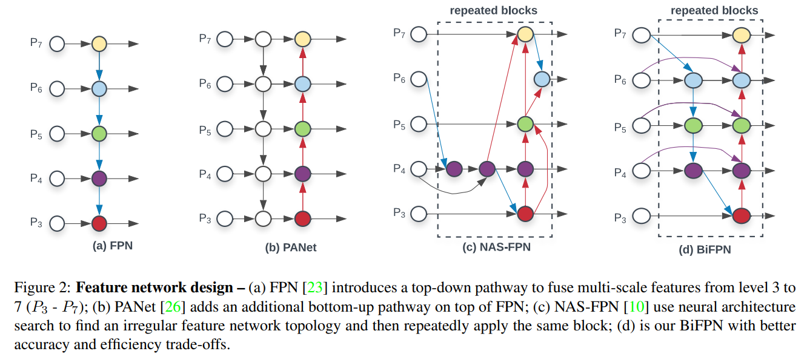
-
-
Model Scaling
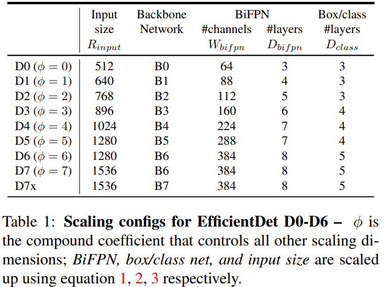
- 큰 Backbone, 큰 Image Size에 집중했음
- EfficientDet은 정확도와 효율을 모두 높일 수 있는 모델을 찾고자 함
- EfficientNet과 같은 Compound Scaling 방식 제안
- EfficientNet B0~B6을 Backbone으로 사용
- BiFPN Network
-
네트워크의 width(=#channels)와 depth(=#layers)를 compound 계수에 따라 증가시킴(grid search)
-
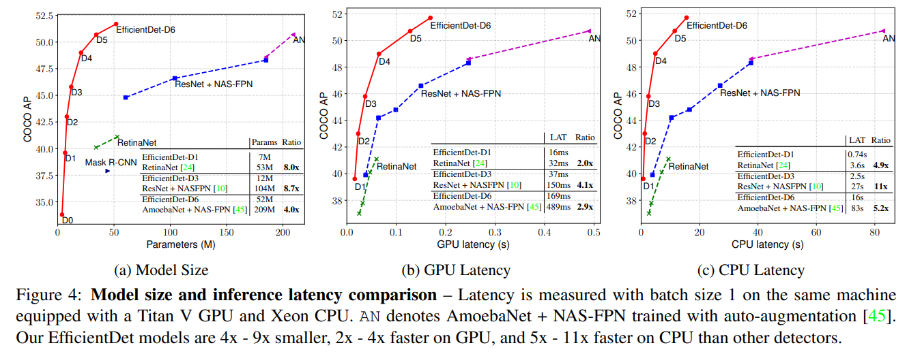